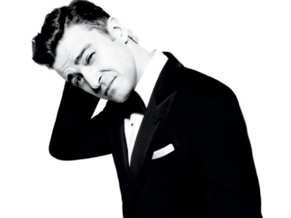

Justin Timberlake

Biografia
Justin Randall Timberlake (Memphis, 31 de Janeiro de 1981) mais conhecido como Justin Timberlake é um músico, cantor, compositor, ator, dublador, produtor musical, dançarino, multi-instrumentista, doutor em música pela Berklee College, golfista e empresário norte-americano que conseguiu fama durante sua infância no programa Mickey Mouse Club e depois ingressou na boy band 'N Sync, que é uma das boy bands mais bem-sucedidas de todos os tempos.